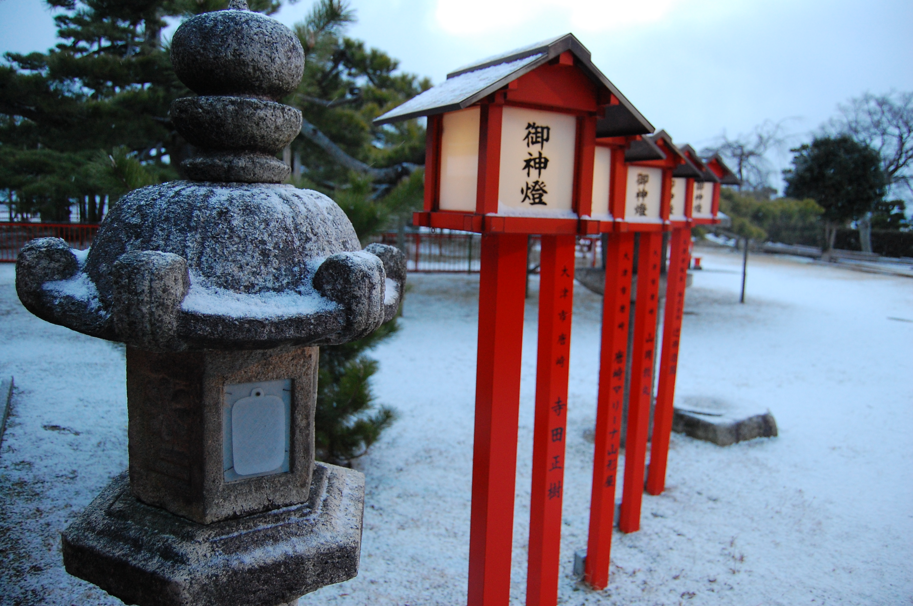

Shinto (“the way of the gods”) is the indigenous faith of the Japanese people and as old as Japan itself. It remains Japan’s major religion alongside Buddhism. Introduction
Shinto does not have a founder nor does it have sacred scriptures like the sutras or the bible. Propaganda and preaching are not common either, because Shinto is deeply rooted in the Japanese people and traditions.
“Shinto gods” are called kami. They are sacred spirits which take the form of things and concepts important to life, such as wind, rain, mountains, trees, rivers and fertility. Humans become kami after they die and are revered by their families as ancestral kami. The kami of extraordinary people are even enshrined at some shrines. The Sun Goddess Amaterasu is considered Shinto’s most important kami.
Some prominent rocks are worshiped as kami. In contrast to many monotheist religions, there are no absolutes in Shinto. There is no absolute right and wrong, and nobody is perfect. Shinto is an optimistic faith, as humans are thought to be fundamentally good, and evil is believed to be caused by evil spirits. Consequently, the purpose of most Shinto rituals is to keep away evil spirits by purification, prayers and offerings to the kami.
Shinto shrines are the places of worship and the homes of kami. Most shrines celebrate festivals (matsuri) regularly in order to show the kami the outside world. Please read more on our special information pages about shrines and festivals.
Shinto priests perform Shinto rituals and often live on the shrine grounds. Men and women can become priests, and they are allowed to marry and have children. Priests are aided by younger women (miko) during rituals and shrine tasks. Miko wear white kimono, must be unmarried, and are often the priests’ daughters.
Important features of Shinto art are shrine architecture and the cultivation and preservation of ancient art forms such as Noh theater, calligraphy and court music (gagaku), an ancient dance music that originated in the courts of Tang China (618 - 907).
Shinto History
The introduction of Buddhism in the 6th century was followed by a few initial conflicts, however, the two religions were soon able to co-exist and even complement each other. Many Buddhists viewed the kami as manifestations of Buddha.
In the Meiji Period, Shinto was made Japan’s state religion. Shinto priests became state officials, important shrines started to receive governmental funding, Japan’s creation myths were used to foster an emperor cult, and efforts were made to separate and emancipate Shinto from Buddhism.
After World War II, Shinto and the state were separated.
Tokyo’s Meiji Shrine is dedicated to the spirits of Emperor Meiji. Shinto Today
People seek support from Shinto by praying at a home altar or by visiting shrines. A whole range of talismans are available at shrines for traffic safety, good health, success in business, safe childbirth, good exam performance and more.
A large number of wedding ceremonies are held in Shinto style. Death, however, is considered a source of impurity, and is left to Buddhism to deal with. Consequently, there are virtually no Shinto cemeteries, and most funerals are held in Buddhist style.
Reference links:
http://www.japan-guide.com/e/e2056.html